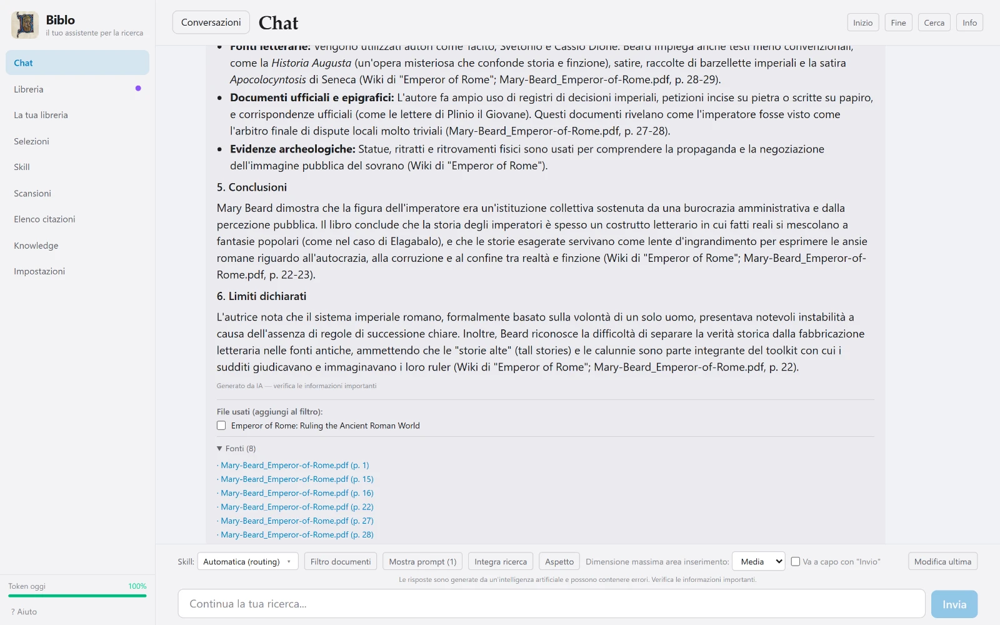
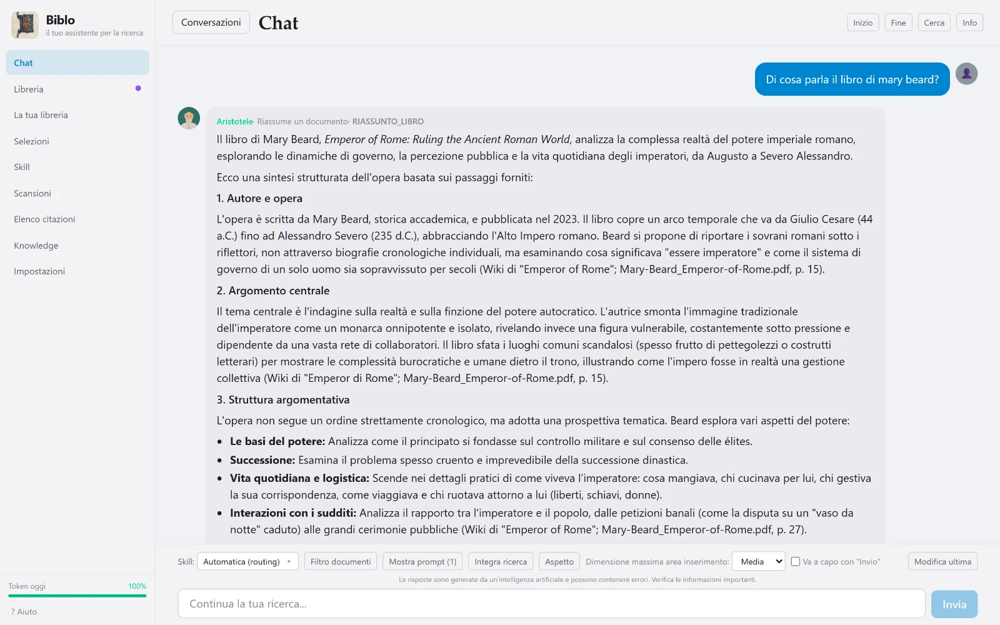
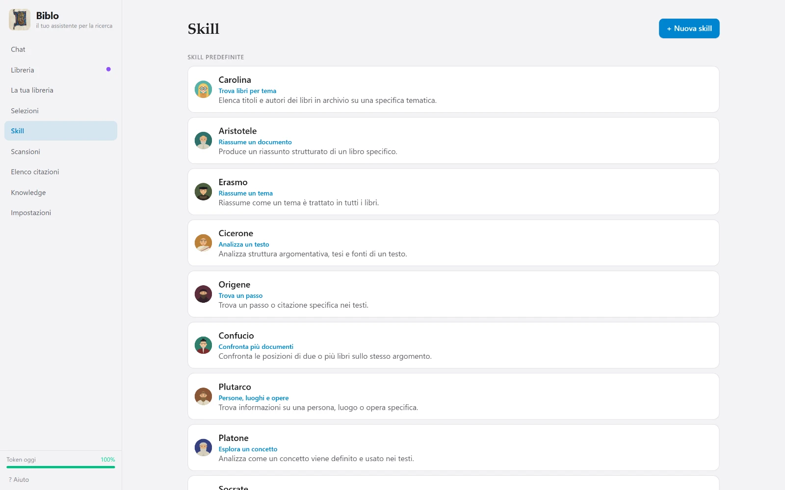
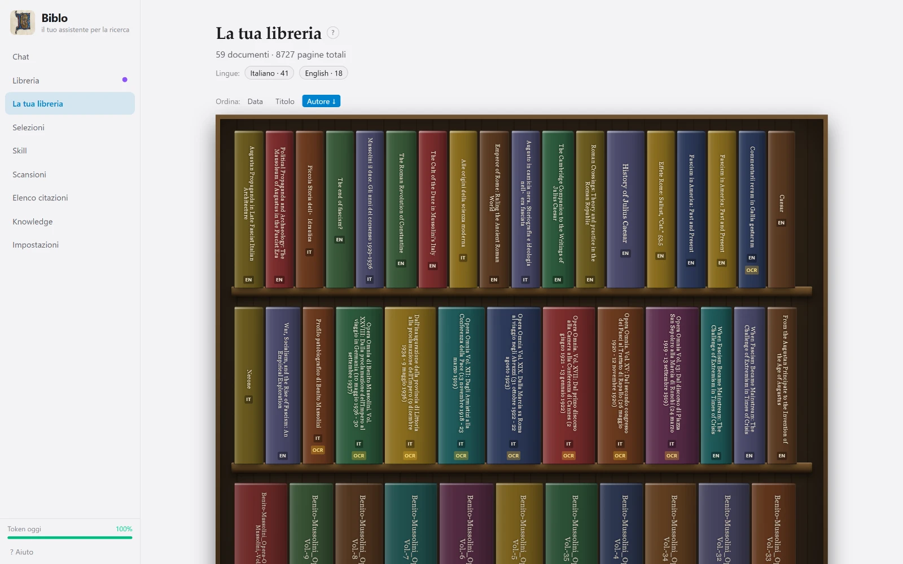
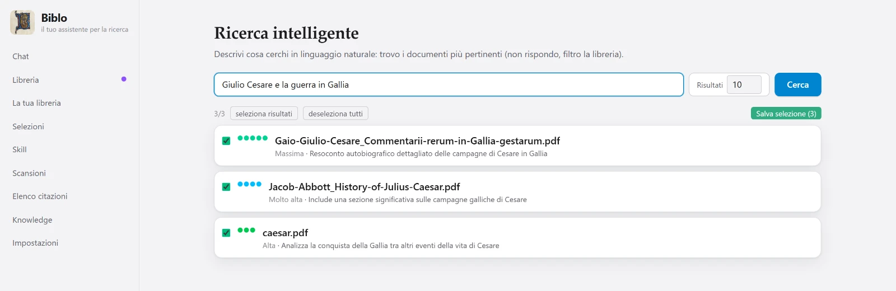
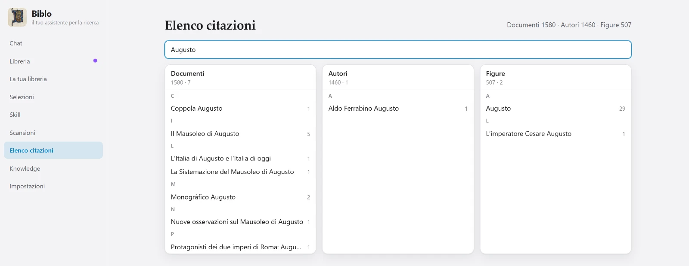

Chat
Answers with sources
The chat doesn't just answer: it lists the files it used and the passages it quoted, with page numbers. From there you can open the PDF, or tick documents to keep working on those alone.

Biblo reads the PDFs already sitting on your computer, indexes them locally and lets you ask questions the way you'd ask a colleague. Every answer tells you which document and which page it came from.
Free · Windows 10 and 11, 64-bit
— downloads so far

Once you have hundreds of volumes, the problem is no longer finding a term: it's remembering which book discussed it, and how. Biblo holds both ends — it searches meaning rather than letters, and hands you the exact passage its answer came from.
Ask “how was consent justified” and it finds the passages about it, even when those exact words never appear.
Under every answer sit the files it used and the passages it quoted, with page numbers. One click opens the PDF at the right spot.
If the answer isn't in your documents, it says so instead of inventing one.
After that the library stays ready: it only updates when you add new documents.
Tell Biblo where the PDFs are. They stay exactly where they are: no uploads, no copies in the cloud, no folders to reorganise.
Three separate, repeatable phases. Read prepares the text for search. Inspect builds the cards for authors, works and figures. Find connections relates the documents to one another.
Type your question in the chat. Biblo picks the right assistant, searches the texts, selects the passages and answers with citations.
Every screen below is the real application, not a mockup.
The chat doesn't just answer: it lists the files it used and the passages it quoted, with page numbers. From there you can open the PDF, or tick documents to keep working on those alone.

Summarising a volume, comparing two texts, finding a passage, analysing an argument: each task has its own assistant with its own way of reading. Biblo picks the one that fits your question — or you pick it yourself.

At a glance: how many documents have been read, how many inspected, how many connected. The three phases are deliberately separate, so you can read everything now and go deeper later.

Your documents become volumes on a shelf, sortable by date, title or author, showing the language and marking the scans. One click opens the book.

Describe a topic and Biblo tells you which volumes actually discuss it, ranked by relevance. The result becomes a selection you can use as the boundary of a conversation.

Everything your texts cite — works, authors, figures — gathered into a single searchable index, with how many times each entry appears.

PDFs without a text layer are recognised with Windows OCR, or EasyOCR for the languages it doesn't cover, and become searchable like the rest.
Narrow a conversation down to a group of documents: outside that selection Biblo doesn't look, neither to search nor to cite.
Interface in five languages, light or dark theme and adjustable zoom: everything scales, nothing becomes unreadable.
Cards, connections and conversations are files on your disk, and you can export them whenever you like.
Reading, the index and the search store are local: no file is uploaded anywhere. When you ask a question, only the passage needed to answer it travels to the language model, together with your question. It doesn't pass through servers of ours, and we don't keep it.
The PDFs stay in your folders. The index lives next to them, on your disk.
What leaves is the passage required for that single answer, not the library.
Biblo uses your key with the model provider: requests go through your account, not ours.
Installs for your user account: no administrator rights, nothing to configure by hand.
— downloads so far
The file isn't published yet: the button goes to the releases page.
(Get-FileHash Biblo_1.0.0_x64-setup.exe -Algorithm SHA256).Hash
8723E0544EFCC8F18C4F77E4F912BA0170CBAFFE390BE827EDD96990E16BBF86
64-bit. There are no macOS or Linux builds for now.
Around 2.5 GB: the application, the model that turns text into numbers, and the index of your library.
Free, and it takes a minute to get from the provider's site. Without a key the AI side can't work, so the app asks for one at startup.
Everything runs on the processor. On modest machines the first read is slow, but the app deliberately leaves cores free so your computer stays usable.
Not to read and search your documents: that part is entirely local. You need one for the chat and for inspection, because answers and cards are generated by a language model that lives online.
The application is free. You need a key from the model provider (Cerebras), which has a free plan: chat usage counts against that plan, not against us.
PDFs, including scanned ones: if a document has no text layer, Biblo runs OCR on it and then treats it like any other.
Biblo is developed against a library of 59 volumes and 8,727 pages, and handles it comfortably. The practical limit isn't the number of files but the time of the first read, which depends on your processor.
That's the warning Windows shows for any program not signed with a commercial certificate, and Biblo isn't yet. You can check the SHA-256 fingerprint of the file you downloaded against the one published above: if they match, the file is exactly the one that was released.
Not by us: we never receive or store your files. When an answer is generated, only the necessary passage is sent to the model provider; what that provider does with it is governed by its own terms, which the privacy policy points to.
Yes, and that's the normal way it works: you enter the key and requests go through your account with the provider.
No. The PDFs stay exactly where they always were, in your folders. Only the application and the data it produced are removed.